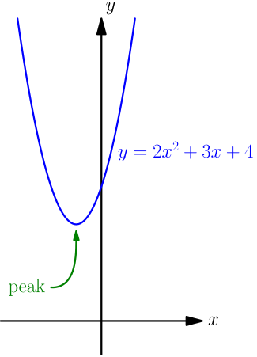
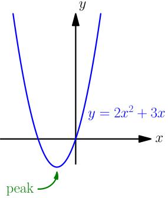
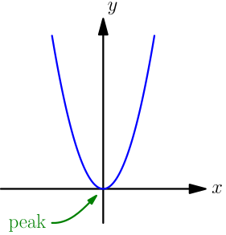
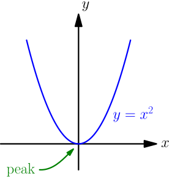
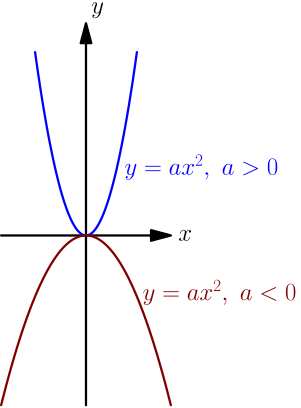
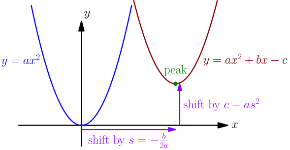
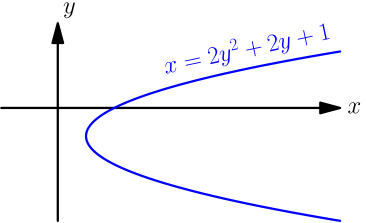

Equation of Parabola¶
In the past (TODO), we have seen parabolas in the context of solving quadratics. We said that a parabola is the graph given by the equation $$ y = ax^2+bx+c, $$ where $a$ is nonzero; if $a = 0$, then this is just $y = bx+c$, which is the equation of a line.
Peak at origin¶
Let's start by finding all parabolas whose peaks are at the origin $(0,0)$. First of all, there are $y=ax^2+bx+c$ parabolas with peaks elsewhere. For example:

If the peak of a parabola is at the origin, then the origin $(0,0)$ must be a point on the parabola, which means that it must satisfy the equation of the parabola: $$ \begin{align} y &= ax^2+bx+c \\ 0 &= a \cdot 0^2 + b \cdot 0+c \\ 0 &= c \end{align} $$ So, if a parabola $y=ax^2+bx+c$ has its peak at origin, then it must have $c=0$, that is, the parabola is actually just $y=ax^2+bx$.
This is still not enough to guarantee that the peak of the parabola is at $(0,0)$:

We see that if the peak of a parabola is at $(0,0)$, then that must be the only place where the parabola touches the $x$ axis, like this:

We can find all touching places by setting $y=0$ in the parabola equation $y=ax^2+bx$. $$ \begin{align} 0 = ax^2+bx& \\ 0 = (ax+b)x& \\ ax+b = 0 \text{ or }& x=0 \\ ax = -b \text{ or }& x=0 \\ x = -\frac{b}{a} \text{ or }& x=0 \end{align} $$ (We can divide by $a$ because $a$ is nonzero; see the beginning of this page.) If the peak is at $(0,0)$, then there should be only one solution, which means that these two solutions should actually be the same solution: $$ \begin{align} -\frac{b}{a} &= 0 \\ b &= 0 \end{align} $$ So, what remains from our parabola equation is just $y = ax^2$.
Is the peak of all $y = ax^2$ parabolas at the origin $(0,0)$? We know that the peak of $y = x^2$ is at the origin:

From stretching curves, we know that if we stretch the parabola in the $y$ direction by any nonzero number $a$, the tip of the parabola stays at $(0,0)$, and if $a$ is negative, we also flip the parabola. To do that, we just replace the $y$ of $y=x^2$ with $\frac{y}{a}$, which gives $$ \frac{y}{a} = x^2. $$ This can be written as $y = ax^2$, which we recognize as a parabola equation with $b=c=0$. If $a$ is negative, we ended up reflecting the $y=x^2$ parabola about the $x$ axis, and now it opens down instead of opening up.

Consider a parabola that opens up or down. The tip of the parabola is at $(0,0)$ if and only if the equation of the parabola can be written as $y=ax^2$, where $a$ is a nonzero number. Here
- $a$ is positive, if the parabola opens up, and
- $a$ is negative, if the parabola opens down.
Shifting the parabola¶
All $y=ax^2+bx+c$ parabolas look quite similar, even though some are more stretched than others, and some open up while others open down. Let's figure out whether we can create any $y=ax^2+bx+c$ parabola from $y=x^2$ by just shifting and stretching. The plan is to start shifting and stretching $y = x^2$ in various ways, and see if we can get to $y = ax^2 + bx + c$.
Let $a,b,c$ be any numbers, and suppose that $a$ is nonzero. Above we saw that stretching $y=x^2$ by $a$ in the $y$ direction gives $y = ax^2$. Let's try shifting this parabola in the $x$ direction by any "shifting number" $s$, positive if we shift right, and negative if we shift left. This gives $$ y = a(x-s)^2 = a(x^2 - 2xs + s^2) = ax^2 + (-2as)x + as^2. $$ Let's choose $s$ such that we have $-2as=b$; that is, $$ s = -\frac{b}{2a}. $$ (We can divide by $a$ because it's nonzero.) This gives us $$ y = ax^2 + bx + as^2, $$ which is almost what we want; we just want $c$ instead of $as^2$. We can get that by shifting vertically by $c-as^2$, because that gives $$ y-(c-as^2) = ax^2 + bx + as^2, $$ which can be written as $$ y = ax^2 + bx + as^2 + c - as^2. $$ This cancels to $y = ax^2 + bx + c$.
Any parabola $y = ax^2+bx+c$ is $y = ax^2$ but shifted.
Let's look at what happens to the peak when we shift the parabola.

The peak of $y = ax^2$ is at $(0,0)$, so the peak of $y = ax^2+bx+c$ is at $(s, c-as^2)$. Plugging in $s=-\frac{b}{2a}$ gives $$ \begin{align} \text{peak} &= (s, c-as^2) \\ &= \left( -\frac{b}{2a}, c-a\left( -\frac{b}{2a} \right)^2 \right) \\ &= \left( -\frac{b}{2a}, c-a\frac{b^2}{4a^2} \right) \\ &= \left( -\frac{b}{2a}, c-\frac{b^2}{4a} \right). \end{align} $$
The peak of the parabola $y = ax^2 + bx + c$ is at $$ \left( -\frac{b}{2a}, c-\frac{b^2}{4a} \right). $$
If you already know the peak $x$, you can find the peak $y$ by using the fact that the peak is a point on the parabola; that is, you get the peak $y$ by plugging in the peak $x$ to the parabola equation $y = ax^2+bx+c$. $$ \begin{align} y &= a\left( -\frac{b}{2a} \right)^2+b\left( -\frac{b}{2a} \right)+c \\ &= a\frac{b^2}{4a^2}-\frac{b^2}{2a}+c \\ &= \frac{b^2}{4a}-\frac{2b^2}{4a}+c \\ &= \frac{b^2-2b^2}{4a}+c \\ &= \frac{-b^2}{4a}+c \\ &= c-\frac{b^2}{4a} \end{align} $$ This is the same result as what we got above with shifts.
If we know the peak of the parabola, let's call it $P$, we can simply shift $y = ax^2$ horizontally by $P_x$ and vertically by $P_y$ to get the parabola equation. This gives the following result.
If a parabola opens up or down, and its peak is at $P=(P_x,P_y)$, then the equation of the parabola is $$ y-P_y = a(x-P_x)^2, $$ where $a$ is a nonzero number, and
- $a$ is positive, if the parabola opens up;
- $a$ is negative, if the parabola opens down.
Sideways parabola¶
The $y = ax^2 + bx + c$ parabolas discussed above can, depending on the sign of $a$, open up or down. Either way, these parabolas open in the direction of the $y$ axis.
An equation like $x = ay^2 + by + c$ also defines a parabola. These parabolas open in the direction of the $x$ axis, so left or right, because with $x$ and $y$ swapped, we would get parabolas that open in direction of the $y$ axis.

Everything we know about $y = ax^2 + bx + c$ parabolas works similarly for $x = ay^2 + by + c$ parabolas, but of course, with $x$ and $y$ coordinates swapped.